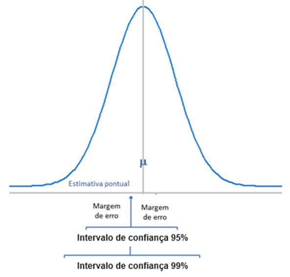
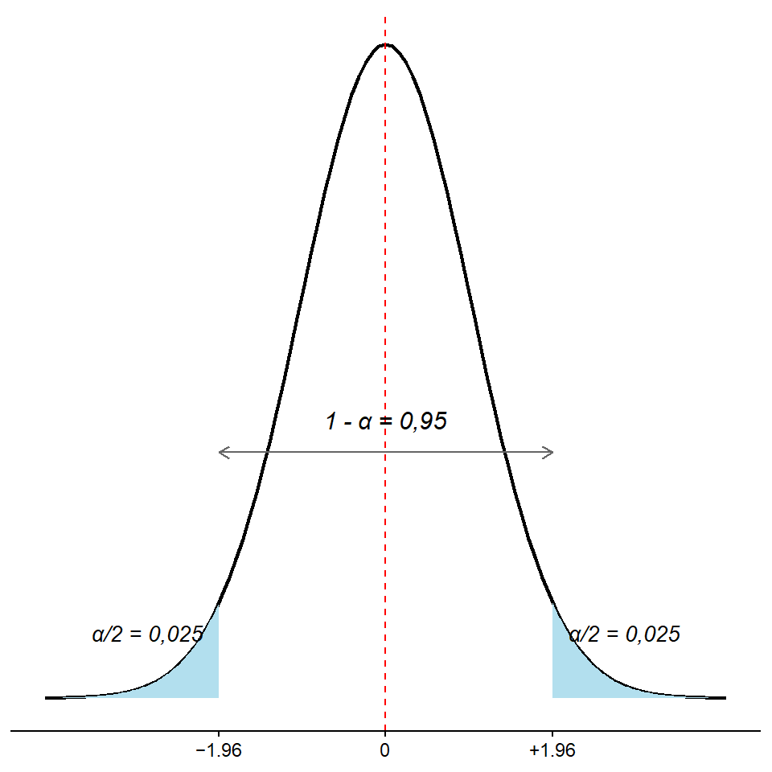
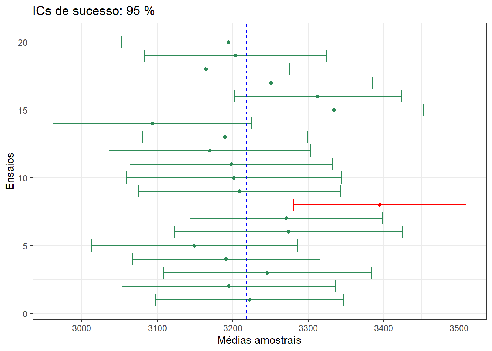
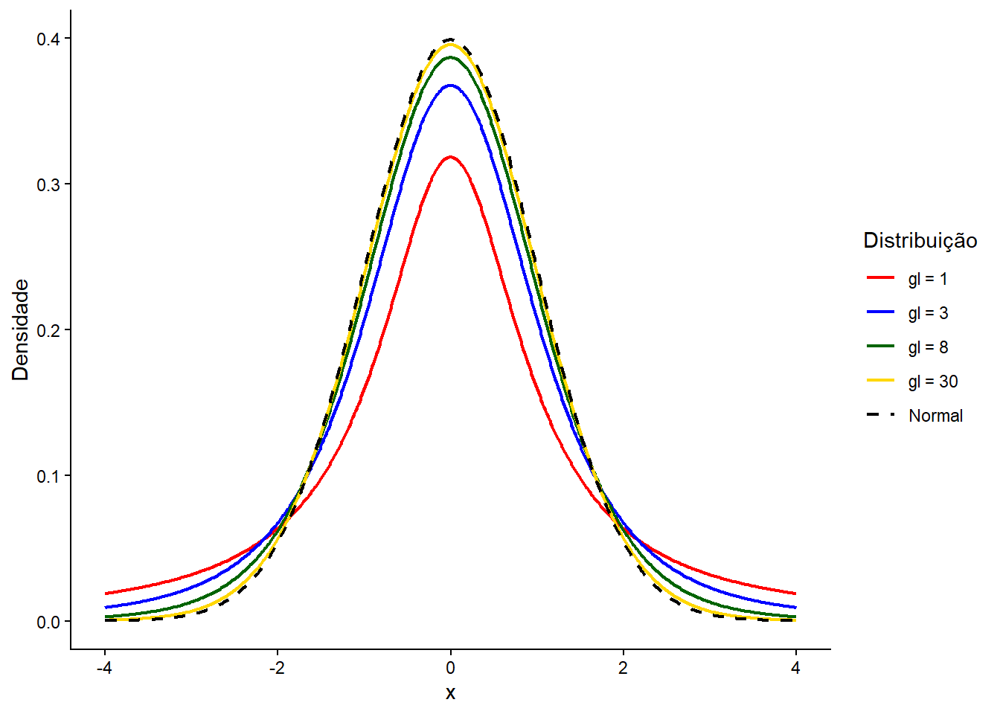
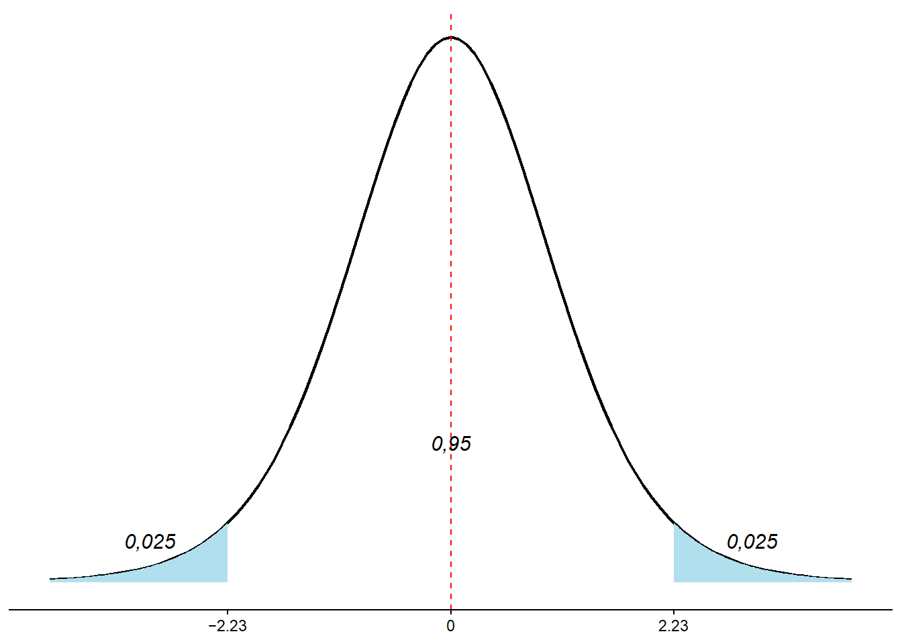
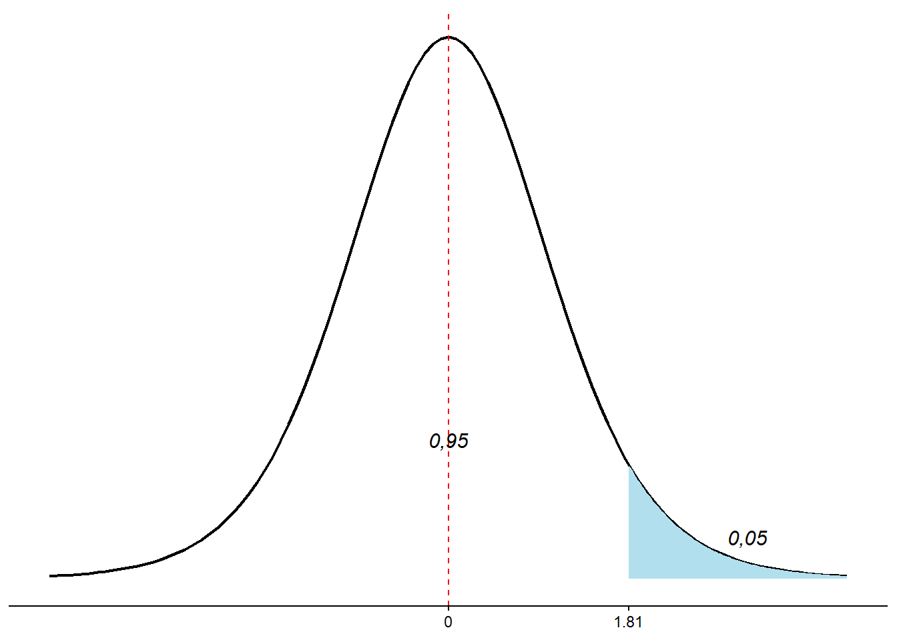

pacman::p_load(DescTools,
flextable,
knitr,
Rmisc,
tidyverse)12 Estimação
12.1 Pacotes necessários
12.2 Introdução
A estatística inferencial é o ramo da estatística que utiliza resultados amostrais para tomar decisões e tirar conclusões sobre a população da qual a amostra foi extraída. A estimação de parâmetros e os testes de hipóteses, em conjunto, constituem a base da inferência estatística.
A estimação é o procedimento pelo qual valores numéricos são atribuídos a um parâmetro populacional com base nas informações de uma amostra. Na inferência, \(\mu\)$\mu$ representa a média populacional e \(p\) denota a proporção populacional. Existem diversos outros parâmetros, como mediana, moda, variância, desvio padrão.
Se fosse viável realizar um censo (uma pesquisa que inclua toda a população de interesse), os procedimentos de estimação seriam desnecessários. O cenário seria equivalente ao de uma eleição: basta contar todos os votos para declarar o vencedor. No entanto, na área da saúde, realizar um censo é frequentemente um processo caro, demorado ou virtualmente impossível. Por isso, costuma-se extrair uma amostra da população para calcular as estatísticas amostrais apropriadas. Com base nelas, são atribuídos valores ao parâmetro de interesse.
A função estatística usada para estimar um parâmetro é denominada estimador. Assim, a média da amostra, \(\bar{x}\), é o estimador da média populacional, \(\mu\); e a proporção da amostra, \(\hat{p}\), é o estimador da proporção populacional, \(p\). Já a estimativa é o valor numérico específico que o estimador assume para uma dada amostra.
A estimação pontual — como usar \(\bar{x}\) para estimar \(\mu\) — é intuitiva e útil, mas tem uma limitação óbvia: não informa o grau de incerteza associado ao valor estimado. Duas amostras diferentes, extraídas da mesma população, dificilmente produzirão a mesma média. Assim, confiar apenas em um número único pode transmitir uma falsa sensação de precisão.
Para lidar com essa incerteza, a estatística inferencial introduz um conceito fundamental: intervalos de confiança (ICs).
12.3 O que é um intervalo de confiança?
Um intervalo de confiança é um intervalo de valores plausíveis para o parâmetro populacional, construído a partir dos dados amostrais (1). Ele é composto por:
uma estimativa pontual (por exemplo, \(\bar{x}\) ou \(\hat p\)),
um erro padrão, que mede a variabilidade do estimador,
um coeficiente crítico, que depende do nível de confiança desejado.
Fórmula Geral
\[\text{estimativa pontual} \ \pm \text{coeficiente crítico} \times \text{erro padrão}\]
O \(\text{coeficiente crítico} \times \text{erro padrão}\) é conhecido como margem de erro (Figura 12.1). O nível de confiança mais comum é 95%, mas nada impede o uso de 90%, 99% ou outros valores, dependendo do contexto.

A Figura 12.2 ilustra como o aumento do nível de confiança amplia a margem de erro: o IC de 99% é mais largo do que o de 95%.
12.4 Intervalo de confiança com \(\sigma\) conhecido
A margem de erro para a estimativa da média populacional, \(\mu\), quando se conhece o desvio padrão populacional ,\(\sigma\), e \(n \ge 30\) ou, mesmo que \(n < 30\), mas a população de onde amostra foi selecionada tem distribuição normal, é a quantidade que é subtraída ou adicionada ao valor da média da amostra, \(\bar{x}\), para obter o intervalo de confiança para \(\mu\). Desta forma, a margem de erro é igual a:
\[me = z_{(1-\frac{\alpha}{2})} \times \frac{\sigma }{\sqrt{n}}\]
Logo, o intervalo de confiança para a média populacional, \(\mu\), para um nível de confiança (1 - \(\alpha \times 100\))%, é igual a:
\[IC_{(1-\alpha)}(\mu) \rightarrow \bar{x} \pm me\]
Se objetivo é construir um intervalo de confiança de 95%, a última equação passa a ser:
\[IC_{(1-\alpha)}(\mu) \rightarrow \bar{x} \pm z_{(0,975)} \times me\]
Onde z é o valor crítico para o nível de confiança escolhido, obtido da tabela de distribuição normal padrão, e me é a margem de erro (\(z_{0,975} \times erro \quad padrao\)). Um intervalo de confiança de 95% significa que a área total sob a curva normal entre dois pontos em torno da média populacional, \(\mu\), é igual a 95%, ou 0,95. A área das caudas é \(\alpha\), ou seja, cada cauda é igual a \(\frac{\alpha}{2}\) (Figura 12.3).

Para encontrar o valor de z para um nível de confiança de 95%, primeiro encontram-se as áreas à esquerda desses dois pontos, \(z_1\) e \(z_2\). Esses dois valores de z serão iguais, mas com sinais opostos. A área total sob a curva é igual a 1. A área entre \(z_1\) e \(z_2\) é igual a \(1 - \alpha = 0,95\).
A área a esquerda de \(z_1\) é igual a 0,025 e a área a esquerda de \(z_2\) é igual a 1 – 0,025 = 0,975. No R, os valores \(z_1\) e \(z_2\) podem facilmente ser obtidos com a função qnorm():
print(c(qnorm(0.025),qnorm(0.975)), 3)[1] -1.96 1.96Dessa maneira, para uma confiança de 95%, é usado um \(z = 1.96\), onde:
\[p(-1,96 \le z \le 1,96) = 0,95\]
Logo,
\[IC_{95\%}(\mu) \rightarrow \bar{x} \pm (1.96 \times \sigma_{\bar{x}})\]
ou
\[IC_{95\%}(\mu) \rightarrow \bar{x} \pm (1.96 \times \frac{\sigma}{\sqrt{n}})\]
12.4.1 Cálculo do intervalo de confiança com \(\sigma\) conhecido
Serão usados dados do dataframe dadosMater.xlsx 1, selecionando as variáveis de interesse (fumo, ig, peso_rn) e filtrando para os recém-nascidos a termo (37 a 41 semanas de idade gestacional):
1 Os dados podem ser baixados no seu diretório de trabalho a partir do repositório do autor no GitHub.
set.seed(1234)
amostra1 <- readxl::read_excel("dados/dadosMater.xlsx") |>
dplyr::select(fumo, ig, peso_rn) |>
dplyr::filter(ig>=37 & ig<42) |>
dplyr::mutate(fumo = factor(fumo,
levels = c(1,2),
labels = c("Fumante", "Não fumante"))) |>
dplyr::slice_sample(n = 50)A partir de uma população de recém-nascidos, cujo desvio padrão (\(\sigma\)) é igual a 459,2 g 2, foi extraída uma amostra (amostra1) de n = 50, média (\(\bar{x}\)) de 3335.8g e desvio padrão (\(s\)) de 512.9. Se forem extraídas outras amostras, espera-se que elas produzam estimativas diferentes da amostra1. Assim, o valor atribuído a média populacional, com base em uma estimativa pontual depende de qual das amostras está sendo usada. Consequentemente, a estimativa pontual atribui um valor a \(\mu\) que quase sempre difere da mesma.
2 A média da população também é conhecida (\(\mu = 3218g\)), vai-se ignorar, por questões didáticas, este fato.
Dados do exemplo para o cálculo
Com 95% de confiança a margem de erro é igual ao \(z_{crítico}\) vezes o erro padrão da média:
n <- 50
x_barra <- mean(amostra1$peso_rn)
sigma <- 459.2
me <- 1.96 * sigma/sqrt(n)
round(me, 2)[1] 127.28Basta, agora, adicionar e subtrair a margem de erro da média:
lim_inf <- x_barra - me
lim_sup <- x_barra + me
round(c(lim_inf, lim_sup), 2)[1] 3208.52 3463.08Assim, tem-se uma confiança de 95% de que a verdadeira média, esteja incluída no intervalo. O nome para isso é intervalo de confiança de 95% para a média populacional.
12.4.2 Função para o cálculo o IC com \(\sigma\) conhecido
O cálculo manual é simples, mas enfadonho, nos tempos dos computadores. Em decorrência, como o R não tem uma função para encontrar os intervalos de confiança para a média de dados com distribuição normal quando o desvio padrão da população é conhecido, foi criada uma função (ic_z [meuPacote]) para cumprir essa ação. Esta função, criada pelo autor, encontra-se no pacote meuPacote, que pode ser instalado a partir do GitHUb:
remotes::install_github("petronioliveira/meuPacote")* checking for file 'C:\Users\petro\AppData\Local\Temp\RtmpcrXvOe\remotes577c500a876\petronioliveira-meuPacote-be9fe1d/DESCRIPTION' ... OK
* preparing 'meuPacote':
* checking DESCRIPTION meta-information ... OK
* checking for LF line-endings in source and make files and shell scripts
* checking for empty or unneeded directories
* building 'meuPacote_0.1.0.tar.gz'# Ou alternativamente
#install.packages("pak")
#pak::pak("petronioliveira/meuPacote")meuPacote::ic_z(amostra1$peso_rn,sigma = 459.2)IC 95%: [3208.5 ; 3463.1] 12.4.3 Interpretação do intervalo de confiança
Se fossem extraídas todas as possíveis amostras de n = 50 da população de recém-nascidos a termo e construído para cada uma delas um intervalo de confiança de 95% em torno de cada média amostral, espera-se que 95% desses intervalos incluirão a média populacional e 5% não incluirão. O IC95% informa sobre a precisão com que a média amostral estima a média populacional desconhecida 3.
3 A media populacional de onde foi extraída a amostra1 é igual a 3218g. Sabe-se porque foi usada uma população conhecida por uma questão didática. A regra é não se conhecer a média populacional, razão da importância do intervalo de confiança
4 Entretanto, aleatoriamente, poderiam aparecer mais de uma.
Na Figura 12.4, são mostradas 20 amostras diferentes de tamanho n = 50, dessa população. Junto aparecem os intervalos de confiança de 95% construídos em torno dessas amostras. Observa-se que apenas uma amostra (em vermelho)4 não inclui a média populacional (linha tracejada vertical em azul). Pode-se afirmar com 95% de confiança que se forem extraídas muitas amostras do mesmo tamanho de uma população e construído intervalos de confiança de 95% em torno das médias dessas amostras, 95% desses intervalos de confiança incluirão a média populacional.

O que o IC não significa
É frequente a interpretação equivocada dos intervalos de confiança. O IC95% não significa que há 95% de probabilidade de a média populacional estar dentro do intervalo calculado — \(\mu\) é um valor fixo (embora desconhecido), não uma variável aleatória.
O correto é: se o mesmo procedimento fosse repetido muitas vezes, 95% dos intervalos construídos dessa forma conteriam a verdadeira média populacional. O intervalo que calculamos pode ou não conter \(\mu\) — mas foi obtido por um método que acerta em 95% das vezes.
Exercício 1
Exercício — IC com \(\sigma\) conhecido
A partir da amostra1, calcule o intervalo de confiança para a idade gestacional média dos recém-nascidos a termo. Registros históricos da mesma maternidade indicam que o desvio padrão populacional é \(\sigma = 1{,}2\) semanas.
- Qual é a margem de erro com 95% de confiança?
- Construa também o IC de 99% e compare a largura dos dois intervalos. O que muda e por quê?
Ver solução
# 1. IC de 95%
meuPacote::ic_z(amostra1$ig, sigma = 1.2)IC 95%: [38.8 ; 39.5] Ver solução
# 2. IC de 99% — margem de erro maior, intervalo mais largo
meuPacote::ic_z(amostra1$ig, sigma = 1.2, conf_level = 0.99)IC 99%: [38.7 ; 39.6] Elevar o nível de confiança de 95% para 99% aumenta o coeficiente crítico de \(z = 1{,}96\) para \(z = 2{,}58\), ampliando a margem de erro em cerca de 32%. Maior confiança implica menor precisão — não há como ter as duas simultaneamente sem aumentar o tamanho amostral.
12.5 Cálculo do intervalo de confiança com \(\sigma\) desconhecido
Na prática, a regra é \(\sigma\) ser desconhecido e precisa ser estimado pela amostra e a estimação da média populacional (\(\mu\)) é feita usando a distribuição t de Student. Em amostras pequenas (\(\le 30\)), usar o modelo normal para construir intervalos de confiança, pode gerar um erro, pois os pressupostos do teorema do limite central não são respeitados. Dessa forma, a distribuição de Student também deve ser usada.
12.5.1 Distribuição t de Student
A distribuição t, desenvolvida por William Sealy Gosset, em 1908, é semelhante à distribuição normal. Como a curva de distribuição normal, a curva de distribuição t é unimodal, simétrica (em forma de sino) em torno da média e nunca encontra o eixo horizontal. A área total sob uma curva de distribuição t é 1 ou 100%. A curva da distribuição t é mais plana do que a curva de distribuição normal padrão. Em outras palavras, ela é mais achatada e mais espalhada. No entanto, conforme o tamanho da amostra aumenta, a distribuição t aproxima-se da distribuição normal padrão.
O formato de uma curva de distribuição t particular depende do número de graus de liberdade. O número de graus de liberdade (gl) para uma distribuição t é igual ao tamanho da amostra menos um, ou seja, \(gl=n-1\), veja Seção 6.5.3.
O número de graus de liberdade é o único parâmetro da distribuição t. Há uma diferente distribuição t para cada número de graus de liberdade, portanto, a distribuição t se constitui em uma família de distribuições (Figura 12.5).

Da mesma maneira que a distribuição normal padrão, a média da distribuição padrão t é 0. Entretanto, ao contrário da distribuição normal padrão, cujo desvio padrão é 1, o desvio padrão de uma distribuição t é \(\sqrt{\frac{gl}{gl-2}}\) , para gl > 2, sempre é maior do que 1. Assim, o desvio padrão de uma distribuição t é maior do que o desvio padrão da distribuição normal padrão.
Os valores de \({t}_{crítico}\) podem ser obtidos usando a função qt() que usa os seguintes argumentos:
- p \(\to\) probabilidade, igual a \(1 - \frac{\alpha}{2}\), considerando-se bicaudal e \(1 - \alpha\) quando unicaudal;
- df \(\to\) graus de liberdade;
- lower.tail \(\to\) lógico; se TRUE, informa a probabilidade da cauda inferior. O padrão é TRUE.
Assim, o valor do \({t}_{crítico}\) para \(gl=10\) é:
alpha <- 0.05
p <- 1 - (alpha/2)
gl = 10
t <- qt(p = p, df = 10, lower.tail = TRUE)
round(t, digits = 2)[1] 2.23A área compreendida entre \(\pm\) 2.23 é igual a 95% (Figura 12.6):
\[p(-2,23\le t\le 2,23)=0,95\]

Quando se considera apenas uma das caudas (unicaudal ou unilateral), o valor do \({t}_{crítico}\) para \(gl=10\) é
t1 <- qt(p = 0.95, df = 10, lower.tail = TRUE)
round(t1, digits = 2)[1] 1.81Assim, a área abaixo de 1.81 é igual a 95% (Figura 12.7).
\[p(t \le 1,81)=0,95\]

12.5.2 Cálculo do intervalo de confiança com \(\sigma\) desconhecido
Serão utilizados os mesmos dados do cálculo do intervalo de confiança com desvio padrão conhecido 5 , obtidos na Seção 12.4.1. Os dados serão atribuídos à amostra2 .
5 Os valores são conhecidos, mas serão ignorados, por enquanto, imagine que eles não existem.
set.seed(1234)
amostra2 <- readxl::read_excel("dados/dadosMater.xlsx") |>
dplyr::select(ig, peso_rn) |>
dplyr::filter(ig>=37 & ig<42) |>
dplyr::slice_sample(n = 50)
x_barra2 <- mean(amostra2$peso_rn, na.rm = TRUE)
dp2 <- sd(amostra2$peso_rn, na.rm = TRUE)
print(round(c(x_barra2, dp2),3))[1] 3335.800 512.925A maneira mais intuitiva de estimar a média da população com base na amostra, é, simplesmente, calcular a média e o desvio padrão. Entretanto, para uma maior precisão, é sempre importante calcular o intervalo de confiança.
12.5.2.1 Cálculo manual do IC
O desvio padrão da amostra (\(s\)) será usado no lugar do desvio padrão da população (\(\sigma\)) quando este não é conhecido, respeitando os pressupostos (2). Então, o erro padrão da média (\(\sigma_{\bar{x}}\)) pode ser estimado pelo \(EP_{\bar{x}}\).
\[EP_{\bar{x}}=\frac{s}{\sqrt{n}}\]
O intervalo de confiança para a \(\mu\) para um nível de confiança (NC) de \((1 – \alpha) \times100\)% é igual a:
\[IC_{NC}(\mu)\rightarrow \bar{x} \pm \left(t_{\left(1-\frac{\alpha}{2},\, gl\right)} \times \frac{s}{\sqrt{n}}\right)\]
Quando o tamanho amostral é grande, o valor de t se aproxima do valor de z, portanto, em situações em que não se conhece o desvio padrão populacional, não há muita diferença se houver uma aproximação de t para z (Tabela 12.1).
n | gl | z | t |
|---|---|---|---|
5 | 4 | 1.96 | 2.57 |
10 | 9 | 1.96 | 2.23 |
30 | 29 | 1.96 | 2.04 |
50 | 49 | 1.96 | 2.01 |
100 | 99 | 1.96 | 1.98 |
200 | 199 | 1.96 | 1.97 |
500 | 499 | 1.96 | 1.96 |
1,000 | 999 | 1.96 | 1.96 |
A amostra2 de n = 50, \(\overline x\) = 3335.8g e \(s\) = 512.925g. Essas estimativas servirão para o cálculo do intervalo de confiança, usando uma distribuição t bicaudal e um nível de significância \(\alpha = 0,05\).
n <- length(amostra2$peso_rn)
alpha <- 0.05
p <- 1 - alpha/2
# Graus de liberdade
gl <- n - 1
# Valor t crítico
tc <- qt(p, gl, lower.tail = TRUE)
# Erro padrão
EP <- round(dp2/sqrt(n),3)
print(round(c(tc, EP),3))[1] 2.010 72.539Com esses dados, calcula-se o intervalo de confiança de 95%:
me2 <- tc * EP
lim_inf2 <- x_barra2 - me2
lim_sup2 <- x_barra2 + me2
ic95 <- c(lim_inf2, lim_sup2)
round(ic95, 2)[1] 3190.03 3481.5712.5.2.2 Cálculo usando uma função do R
O R possui algumas funções que calculam o intervalo de confiança para variáveis numéricas, baseadas na distribuição t. Entre elas, a função MeanCI(), incluída no pacote DescTools (3). Leia mais sobre a função na ajuda (?DescTools::MeanCI()).
DescTools::MeanCI(amostra2$peso_rn, conf.level = 0.95,
sides = "two.sided", method = "classic") mean lwr.ci upr.ci
3335.800 3190.028 3481.572 Como alternativa, a função ic_t() do meuPacote produz o mesmo resultado com saída detalhada:
meuPacote::ic_t(amostra2$peso_rn)IC 95%: [3190.0 ; 3481.6] Exercício 2
Exercício — IC com \(\sigma\) desconhecido
Usando a amostra1, compare o IC95% do peso ao nascer entre recém-nascidos de mães não fumantes e fumantes.
- Calcule os dois intervalos com
ic_t(). - O que a diferença de largura entre os intervalos revela sobre o papel do tamanho amostral?
- Com base nos intervalos, há evidência de diferença no peso médio entre os grupos?
Ver solução
nao_fumantes <- amostra1 |> dplyr::filter(fumo == "Não fumante")
fumantes <- amostra1 |> dplyr::filter(fumo == "Fumante")
cat("Não fumantes (n =", nrow(nao_fumantes), ")\n")Não fumantes (n = 41 )Ver solução
meuPacote::ic_t(nao_fumantes$peso_rn)IC 95%: [3193.7 ; 3530.7] Ver solução
cat("Fumantes (n =", nrow(fumantes), ")\n")Fumantes (n = 9 )Ver solução
meuPacote::ic_t(fumantes$peso_rn)IC 95%: [2902.0 ; 3529.1] O IC das fumantes é substancialmente mais largo porque o grupo tem apenas 9 observações — o desvio padrão amostral aumenta e o valor \(t_{crítico}\) cresce com poucos graus de liberdade. Como os dois intervalos se sobrepõem, não há evidência suficiente para concluir diferença significativa com apenas esses dados.
12.6 Intervalo de Confiança para uma proporção populacional
12.6.1 Cálculo do intervalo de confiança para a proporção
Os dados extraidos para constituir amostra1 (Seção 12.4.1) servirão, utilizando a variável fumo, para os cálculos do intervalo de confiança de uma proporção.
Cálculo da estimativa pontual da proporção de fumantes
Na amostra1, a proporção de fumantes é:
tab <- table(amostra1$fumo)
tab
Fumante Não fumante
9 41 tabFumo <- round (prop.table (tab), 3)
tabFumo
Fumante Não fumante
0.18 0.82 A proporção de mulheres fumantes na amostra1 é igual a 18%.
Cálculo manual com aproximação normal
1ª etapa: verificar a premissa de que quando a proporção populacional é desconhecida a proporção pontual (\(\hat p\)) e o seu complemento (\(\hat q = 1 - \hat p\)) multiplicados, cada um, por \(n\), devem ser maior do que 5.
n <- length(amostra1$fumo)
tabFumo[1]*nFumante
9 (1 - tabFumo[1])*nFumante
41 Como se observa, ambos os valores são maiores do que 5.
2ª Etapa: O intervalo pode ser estimado pela distribuição normal e é necessário calcular o z_crítico:
alpha <- 0.05
p <- 1 - alpha/2
zc <- qnorm (p, mean = 0, sd = 1)
round(zc, 2)[1] 1.963ª Etapa: Cálculo do erro padrão da proporção (\(\sqrt \frac {\hat p \times \hat q}{n}\)) e da margem de erro:
# Extração da proporção amostral do tabFumo
prop <- tabFumo [1]
# Cálculo do EP amostral
EP <- sqrt((prop * (1 - prop))/n)
# Cálculo da margem de erro(me)
me <- zc * EP
# dados necessários para o cálculo do IC95%
print(c(prop, me), digits = 3)Fumante Fumante
0.180 0.106 4ª Etapa: Intervalo de confiança
ic_prop <- c((prop - me), (prop + me))
round(ic_prop, 3)Fumante Fumante
0.074 0.286 Cálculo usando uma função
O chamado Intervalo de Confiança Exato corrigem as deficiências da aproximação normal. O R tem uma função para este cálculo: BinomCI() do pacote DescTools (3). É preferível usar o método de Clopper e Pearson que fornece o IC exato.
Os argumentos da função BinomCI() são:
- x \(\to\) é o número de desfechos, sucessos;
- n \(\to\) é o tamanho da amostra, número de ensaios;
- p \(\to\) probabilidade, hipótese nula; se ignorada o padrão é 0,50;
- conf.level \(\to\) nível de confiança, o padrão é 0.95;
- method \(\to\) possui vários métodos para calcular intervalos de confiança para uma proporção binomial como: “clopper-pearson” (exact interval), “wilson”, “wald”, “agresti-coull”, “jeffreys”, “modified wilson”, “modified jeffreys”, “arcsine”, “logit”, “witting”, “pratt”. O método padrão é o de “wilson”. Qualquer outro método, há necessidade de solicitar;
- sides \(\to\) hipótese alternativa padrão “two.sided” (bilateral), mas pode ser “right” ou “left” (unilateral a direita ou a esquerda, respectivamente).
x <- tab[1]
IC <- BinomCI (x,
n,
conf.level = 0.95,
method = "clopper-pearson")
round(IC, 3) est lwr.ci upr.ci
[1,] 0.18 0.086 0.314Observe que existe uma pequena diferença entre os valores da aproximação normal e o exato, com o método de “clopper-pearson”
Exercício 3
Exercício — IC para uma proporção
Extraia uma amostra maior (amostra3, \(n = 200\)) do mesmo banco de dados (dadosMater.xlsx), restrita a recém-nascidos a termo.
- Qual é a proporção estimada de mães fumantes?
- Calcule o IC de 95% pelo método exato de Clopper-Pearson.
- Recalcule para 99% e compare a largura dos dois intervalos.
- A premissa de usar a aproximação normal (\(n\hat{p} > 5\) e \(n\hat{q} > 5\)) é satisfeita?
Ver solução
set.seed(5271)
amostra3 <- readxl::read_excel("dados/dadosMater.xlsx") |>
dplyr::select(fumo, ig) |>
dplyr::filter(ig >= 37 & ig < 42) |>
dplyr::mutate(fumo = factor(fumo,
levels = c(1, 2),
labels = c("Fumante", "Não fumante"))) |>
dplyr::slice_sample(n = 200)
tab3 <- table(amostra3$fumo)
prop3 <- tab3[1] / sum(tab3)
# 4. Verificação da premissa da aproximação normal
cat("n * p_hat =", round(sum(tab3) * prop3),
"| n * q_hat =", round(sum(tab3) * (1 - prop3)), "\n\n")n * p_hat = 33 | n * q_hat = 167 Ver solução
# 2. IC 95% — método exato
cat("IC 95% (Clopper-Pearson):\n")IC 95% (Clopper-Pearson):Ver solução
print(round(DescTools::BinomCI(tab3[1], sum(tab3),
conf.level = 0.95,
method = "clopper-pearson"), 3)) est lwr.ci upr.ci
[1,] 0.165 0.116 0.224Ver solução
# 3. IC 99%
cat("\nIC 99% (Clopper-Pearson):\n")
IC 99% (Clopper-Pearson):Ver solução
print(round(DescTools::BinomCI(tab3[1], sum(tab3),
conf.level = 0.99,
method = "clopper-pearson"), 3)) est lwr.ci upr.ci
[1,] 0.165 0.104 0.243Com \(n = 200\), ambas as premissas da aproximação normal são satisfeitas. O IC de 99% é cerca de 25% mais largo que o de 95%, ilustrando a mesma relação entre confiança e precisão observada nos exercícios anteriores — agora aplicada a proporções.
Referências
1.
Altman DG. Why We Need Confidence Intervals. World J Surg. 2005;29:554–6.
2.
Motulsky H. The Theory of Confidence Intervals. Em: Intuitive Biostatistics: A Nonmathematical Guide to Statistical Thinking. Second Edition. New York, NY: Oxford University Press; 2010. p. 96–102.
3.
Signorell A et al. DescTools: Tools for Descriptive Statistics [Internet]. 2025. Disponível em: https://CRAN.R-project.org/package=DescTools